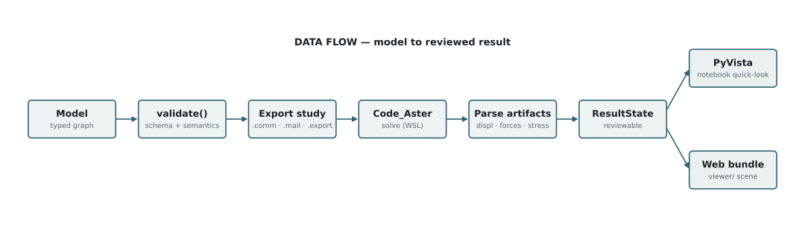
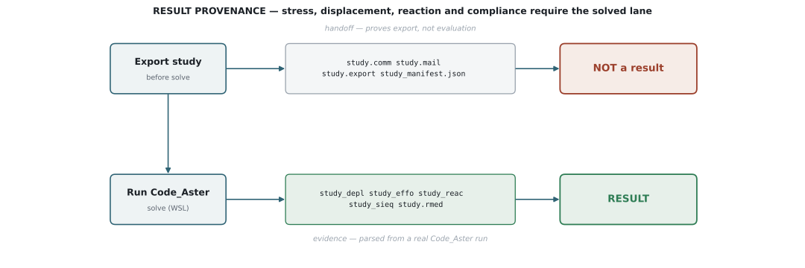

1. Define
Build pipe routes, bends, supports, sections, materials, loads,
operating states, obstacles, racks, and imported components in a
TubaModel.
Overview
Tuba v4 keeps the engineering model in Python and treats Code_Aster as the production solver. Exported solver files are a handoff. Solved artifacts are the source for engineering result displays.
The model is the center of the system. Builders and autorouting write
model geometry; validate() gates it; Code_Aster export and
execution produce artifacts; result import feeds the two supported
review surfaces.

ResultState that feeds either
a PyVista notebook quick-look or a browser scene bundle.
Build pipe routes, bends, supports, sections, materials, loads,
operating states, obstacles, racks, and imported components in a
TubaModel.
Use CodeAsterSolver or model.solve(solver="code_aster") to
export and execute a Code_Aster study on a configured runtime.
Import solver artifacts into FEAResults, PyVista notebook views,
or a Three.js scene bundle with object maps and overlays.

| Area | Implementation | Primary modules |
|---|---|---|
| Pipe-native model | Materials, pipe/beam/bar/cable sections, nodes, elements, supports, bends, tees, groups, attributes, placements. | tuba.model, tuba.builder |
| Operating states | Load cases and operations with gravity, pressure, temperature, wind, and route/station scoped fields. | tuba.model.Operation, tuba.solver.aster_loads |
| Code_Aster handoff | Study export writes .mail, .comm, .export, manifests, and sidecars with stable Tuba references. |
tuba.solver.aster, tuba.solver.aster_mesh, tuba.solver.aster_comm |
| Result import | Parsed displacement, reaction, force, stress, RMED summary, and analysis-mesh provenance. | tuba.analysis, tuba.solver.base |
| Visualization | PyVista quick-look plots and JSON scene bundles rendered by the browser viewer. | tuba.plotting, tuba.visualization, viewer/ |
| Compliance | ASME B31.3 sustained and expansion stress checks with B31J stress-intensification and flexibility factors, against temperature-dependent allowables. | tuba.compliance |
| Support optimization | Rule-based, genetic, and LLM-assisted support placement against stress, deflection, reaction, and cost objectives. | tuba.optimization |
| Clash and rules | Geometric clash detection and rule checks (clash-free, support spacing) with markdown and dict reports. | tuba.clash, tuba.rules |
| Quantities and BOM | Per-element takeoff (length, mass, insulation, surface and wind area), model and group totals, and BOM export. | tuba.quantities, tuba.external |
| IFC exchange | IFC4 export and import of piping networks, structural frames, and supports. | tuba.external |
| Autorouting | Deterministic A* centerline routing with expansion-loop and multi-pipe network variants, cost scoring, and reports. | tuba.routing |
| Load-path analysis | Support and rack association plus load-path reporting for review. | tuba.load_path |
These terms recur across the manual. They are defined once here so the other pages can use them precisely.
| Term | Meaning |
|---|---|
| Route | A named pipe run. Builder commands create nodes and elements tagged with a route id so fields, reports, and reviews can be scoped to it. |
| Station | Running arc-length distance along a route centerline from its start, in meters. Used to scope a field to a span (station_start to station_end). |
| Operation | A uniform operating scenario (gravity, pressure, temperature, wind) that compiles to a load case. |
| Load case | The compiled set of loads and boundary conditions a Code_Aster study actually solves. |
| Support | A boundary condition attached to a node: anchor, guide, rest, spring, and directional variants. |
| Section | A named cross-section definition (pipe, bar, cable, rectangular, or I-beam) that elements reference; see Modeling. |
| Placement frame | A named local coordinate system (axis is local Z, ref_direction projects to local X) for authoring and reusing geometry in local coordinates. |
| Fragment | A reusable model sub-assembly authored in local coordinates and placed into a model through a coordinate system. |
| SIF | Stress-intensification factor (B31J). Scales nominal bending stress at fittings and bends for the compliance check. |
| Reserved envelope | The spatial clearance volume a route reserves so other pipes in a network stay clear of it. |
| Clash | A geometric interference between modeled bodies (pipe, obstacle, support), detected by the clash engine. |
| Sidecar | A companion metadata file written next to exported solver files that carries stable Tuba references back to model entities. |
FEAResults | The parsed solver-result object with accessors (get_displacement, get_max_von_mises) and quick-look plots. |
ResultState | A revision-tagged, persisted result snapshot (tied to a study and a model revision) used for review and scene bundles. |
| Scene bundle | A browser-loadable JSON scene (geometry, metadata, overlays, result states) written for the viewer/ app. |
The old TUBA v2 documentation taught the right shape: install the solver environment, write a command script, run the simulation, then inspect results. Tuba v4 keeps that engineering sequence but changes the implementation surface.
| V2 concept | V4 equivalent |
|---|---|
TUBA.py command_script.py |
Python package API: from tuba import Model plus model.pipe(...). |
| Generated Salome, Code_Aster, and ParaVis scripts | Generated Code_Aster study files plus imported result artifacts and review bundles. |
| Manual Salome-Meca/ParaVis interaction | Configured Code_Aster runtime, artifact import, notebooks, and web-scene review. |
| Command list reference | Current API reference for model, builder, operation, solver, artifact, and visualization commands. |
Do not present fabricated, mock, hand-built, or proxy values as solver
results. .comm, .mail, and .export files prove export, not
evaluation. Production stress, displacement, reaction, thermal
expansion, operating-state clash, compliance, and result visualization
require Code_Aster-backed artifacts.
